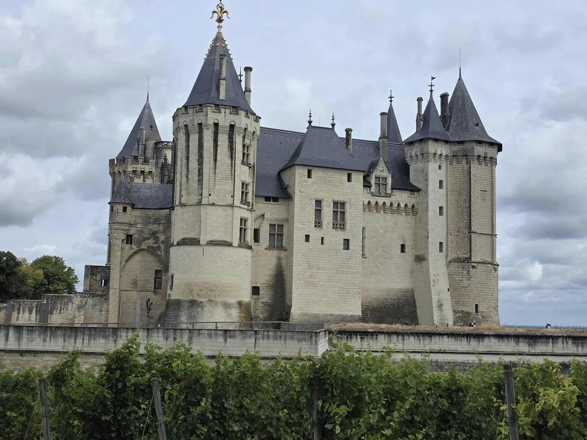
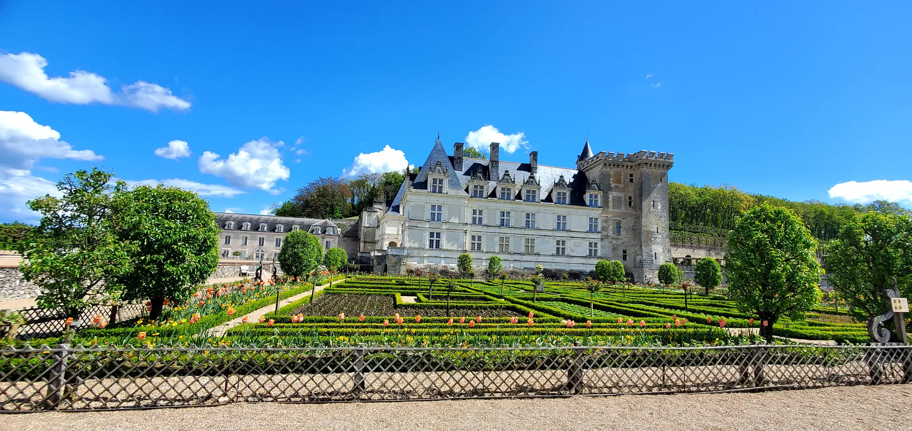
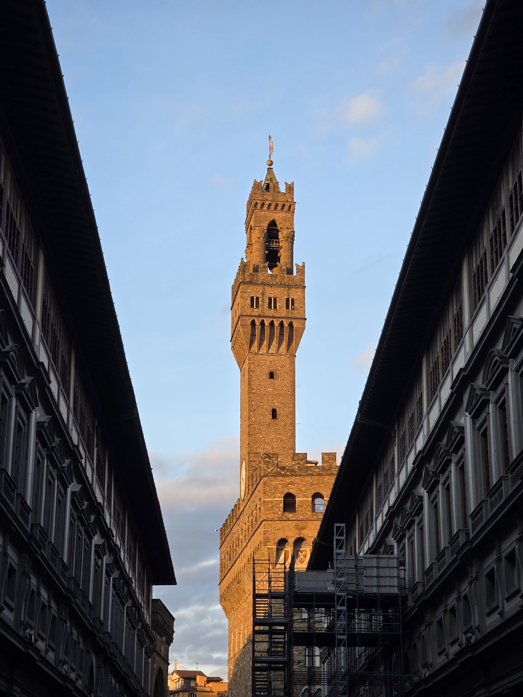
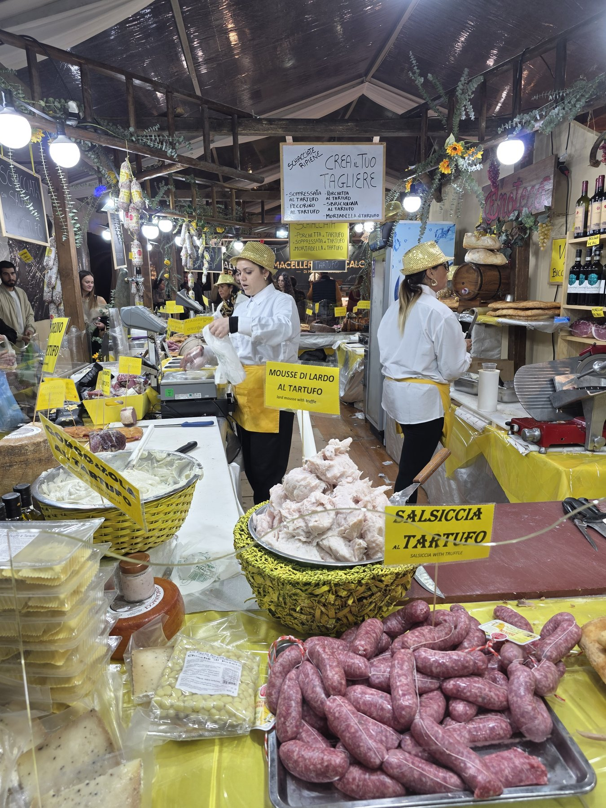
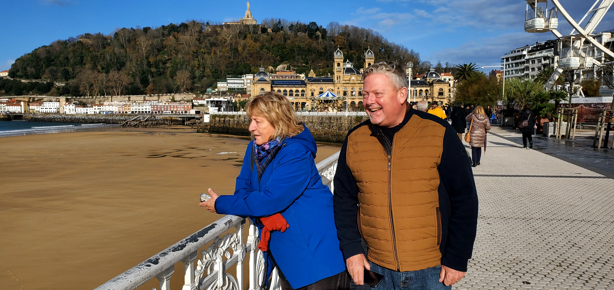
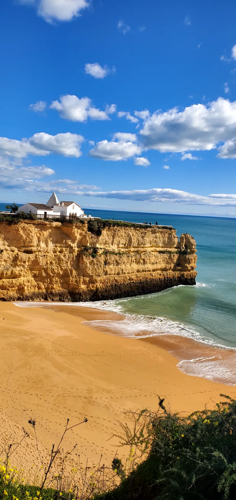
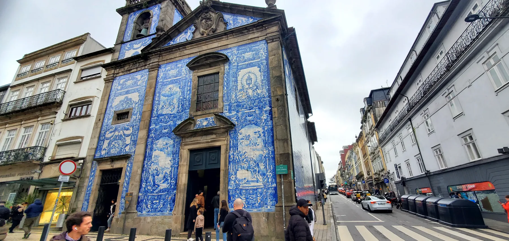
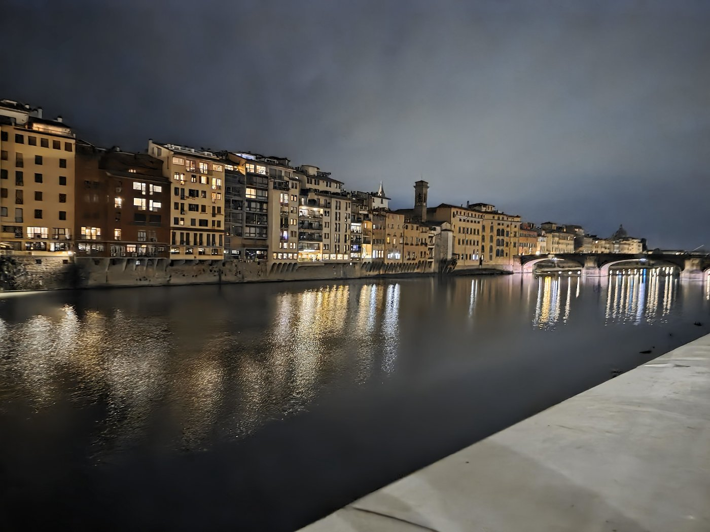
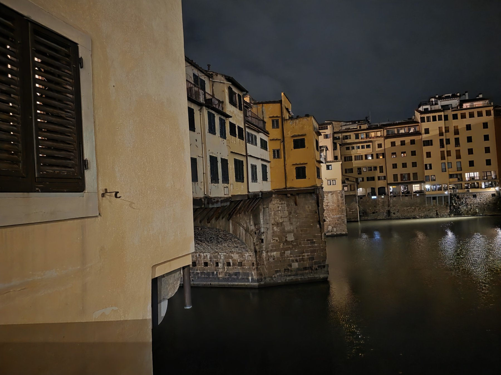

We live in the Vendée and travel constantly. Our network reaches the corners we know personally — and trusted partners cover the rest.

From our front door in the Vendée we reach Paris in three hours, Lyon in five, Bordeaux in three. We know the country the way one knows a long marriage — its moods, its seasons, its small daily kindnesses.

Villandry from its kitchen gardens. Two hours from our front door — the kind of day we plan around what's blooming.

Florence we know intimately — the cooking schools, the trattorie on the right side streets, the truffle hunters in the Tuscan woods, the wine families in Chianti. From Rome to the Dolomites, every region has a different table waiting.

Truffle season in the hills outside Florence. Salsiccia, pecorino, mousse di lardo — all al tartufo. The kind of stand we send our guests to first.

From the pintxos counters of San Sebastián to the rooftops of Lisbon, the Iberian Peninsula is where we go when we want the food to be louder and the afternoons longer. Some of our most memorable client trips have started here.

A clifftop chapel above a quiet beach in the western Algarve. Iberia rewards travelers who let it sprawl — and we know its corners.

The Capela das Almas, wrapped in azulejo. The Douro Valley is an hour upriver — and we know the lodges that pour with the door closed.

Vienna in opera season. Salzburg in summer. Prague in autumn. The cities of the old Empire reward travelers who arrive at the right moment, with the right ticket, with someone who knows which café to settle into between acts.

Amsterdam, Bruges, Antwerp — small, walkable, packed with art and cycling. For travelers who already know the south of Europe, this is where the rooms get bigger and the museums quieter. We extend, on request, to London and Edinburgh.